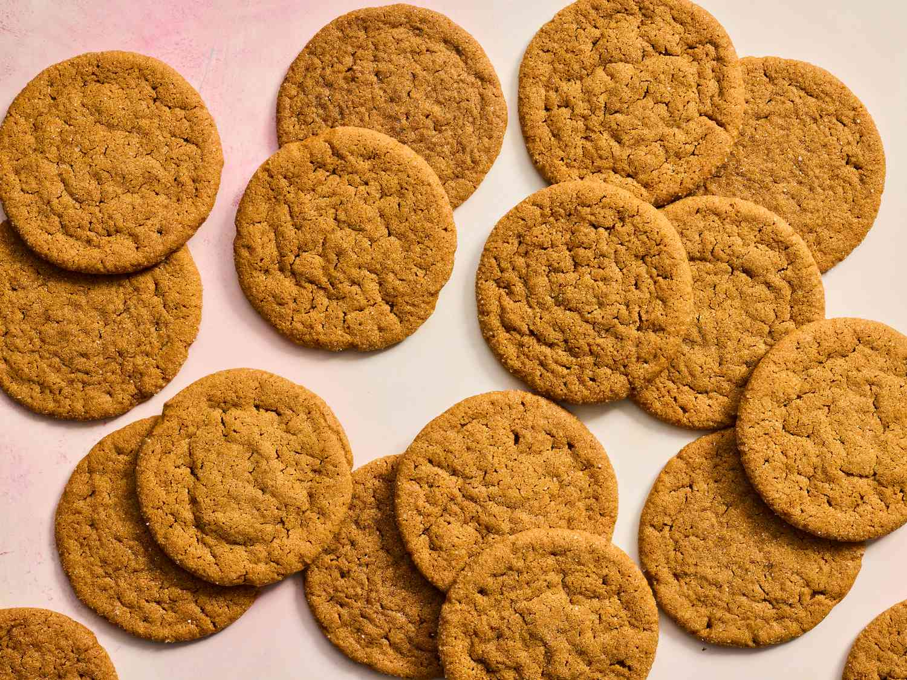

Introduction
These delicious ginger cookies are so yummy and easy to make. This is my favorite ginger cookies recipe. Original recipe here.
Ingredients
These are the ingredients you will need.
- 2 tablespoons sugar
- 2 ¼ cups all-purpose flour
- 2 teaspoons ground ginger
- 1 teaspoon baking soda
- ¾ teaspoon ground cinnamon
- ½ teaspoon ground cloves
- ¼ teaspoon salt
- ¾cup butter or margarine, softened
- 1 cup white sugar
- 1 Large Egg
- ¼ cup molasses
- 1 tablespoon water
Instructions
{kind=link}

- Gather all ingrdients. Keep a bit of sugar left over in a bowl.
- Preheat the oven to 175 ° C(350 ° F)
- Sift flour, ginger, baking soda, cinnamon, cloves, and salt into a bowl.
- Beat butter and remaining 1 cup sugar in a separate large bowl with an electric mixer until light and fluffy. Beat in egg, then stir in molasses and water. Gradually stir the sifted ingredients into the molasses mixture until well combined.
- Create 24 walnut sized balls of dough and sprinkle with sugar
- Place balls of dough 2 inches apart onto un-greased cookie sheets, and flatten slightly with the bottom of a glass.
- Bake in the preheated oven for 8 to 10 minutes, switching racks halfway through.
- Remove from the oven and allow cookies to cool on the baking sheets for 5 minutes, then transfer to a wire rack to cool completely.
- Enjoy!